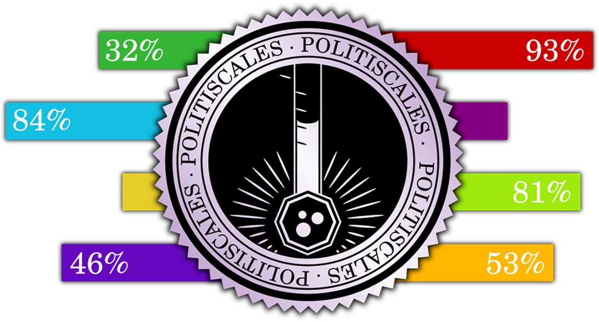

Ievads
Laipni lūgti PolitiScales - politiskajā testā, kas ļauj jums iepazīties ar politisko situāciju. Jums tiks piedāvāti vairāki paziņojumi. Par katru no tiem noklikšķiniet uz pogas, kas atbilst jūsu viedoklim.
Jautājumos tiek pieņemts, ka esat tādas valsts pilsonis, kurā ir daudzpartiju politiskā sistēma un tirgus ekonomika. Taču, ja tas tā nav, šis tests joprojām var būt uzticams attiecībā uz lielāko daļu atbilžu.
Ja nesaprotat jautājuma nozīmi, mēģiniet veikt nelielu izpēti internetā, lai labāk izprastu tā nozīmi. Lai neizkropļotu rezultātu, neievietojiet atbildi izlases veidā.
Šajā testā tiek mēģināts atspoguļot pēc iespējas plašāku viedokļu spektru, tāpēc tajā ir frāzes, kas var jūs šokēt, jo īpaši attiecībā uz rasismu un homofobiju.